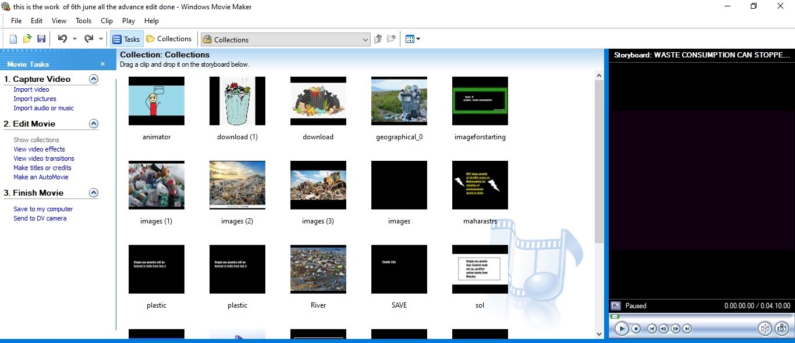
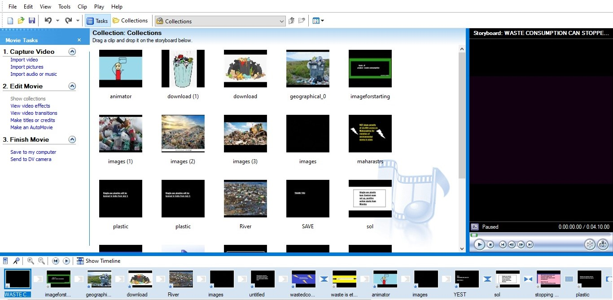

Import media
Launch Windows Movie Maker and click on the "Add videos and photos" or a similar button to import the media files (videos, photos, audio) you want to include in your video. You can select multiple files at once by holding down the Ctrl key while selecting them.

Arrange media
After importing the files, you'll see them in the storyboard or timeline view. Drag and drop the files onto the timeline in the desired order to arrange them sequentially.


Trim and split clips
To trim or split a video clip, select it on the timeline and use the "Trim tool" or right-click and choose the respective option. Trim allows you to remove unwanted portions from the beginning or end of a clip, while Split divides a clip into two separate parts.